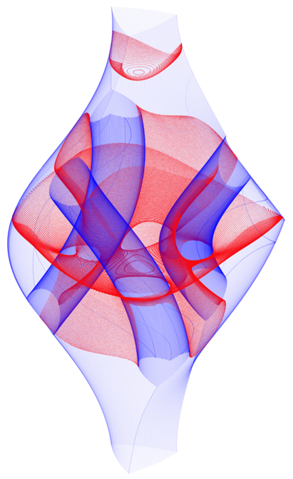

Singularities of Robot Mechanisms
Numerical Computation and Avoidance Path Planning
O. Bohigas, M. Manubens, and L. Ros
Springer series on Mechanisms and Machine Science
In press
This book presents the singular configurations associated with robot mechanisms, together with robust methods for their computation, interpretation, and avoidance path planning. Having such methods is essential as singularities generally pose problems to the normal operation of a robot, but also determine the workspaces and motion impediments of its underlying mechanical structure. A distinctive feature of this book is that the methods are applicable to nonredundant mechanisms of general architecture, defined by planar or spatial kinematic chains interconnected in an arbitrary way. Moreover, singularities are interpreted as silhouettes of the configuration space when seen from the input or output spaces. This leads to a powerful image that explains the consequences of traversing singular configurations, as well as the rich information that can be extracted from them. The problems are solved by means of effective branch-and-prune and numerical continuation methods that are of independent interest in themselves. The theory can be put into practice too: a companion web page gives open access to implementations of the algorithms and the corresponding input files. Using them, the reader can gain hands-on experience on the topic, or analyse new mechanisms beyond those examined in the text. Overall, the book contributes with new tools for robot design, and constitutes a single reference source of knowledge that is otherwise dispersed in the literature.
